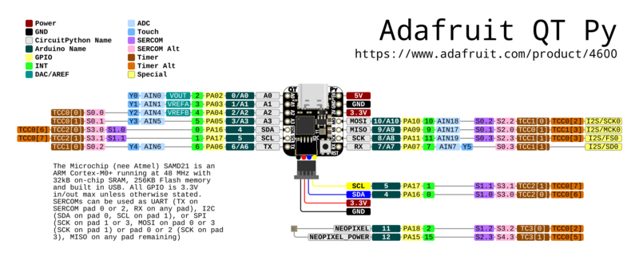
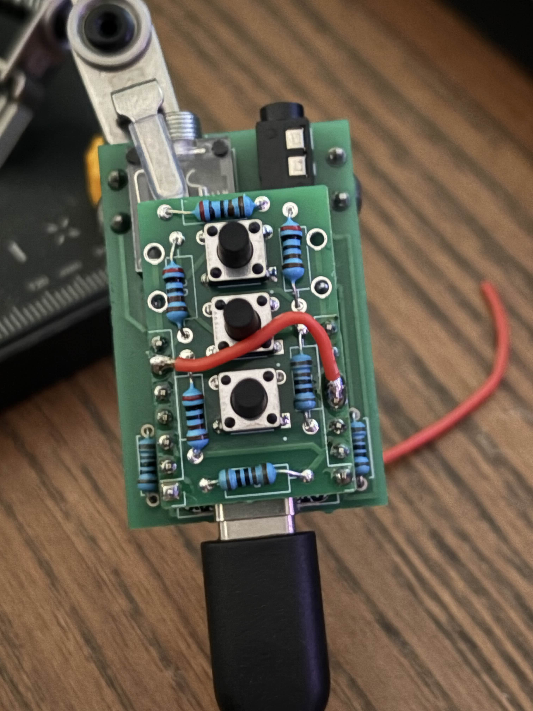
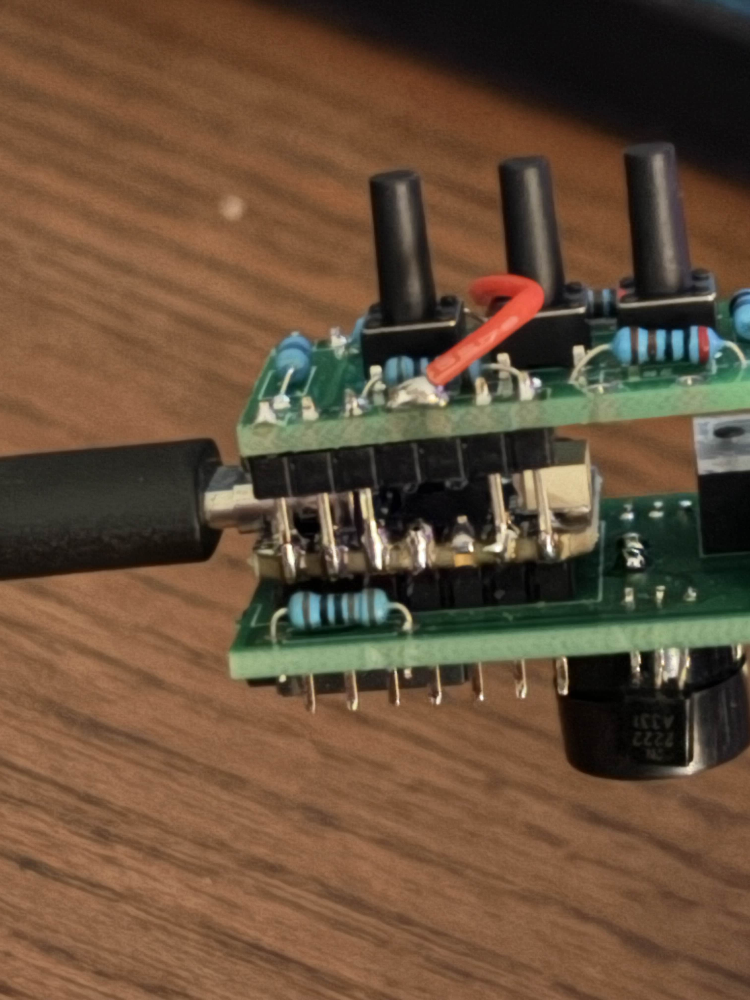

Button Hat Hardware Modification Guide
Required for Advanced PCB with Button Hat - Firmware dated November 11, 2025 or later
📌 Why is this modification needed?
The latest firmware moves the button input from pin A4 to pin A8 to avoid conflicts with radio output functionality on the Advanced PCB. This requires a simple one-time hardware modification to reroute the button signal.
If you don't have a button hat installed, you don't need this modification.
🛠️ Materials Needed
- Soldering iron (temperature controlled, 350-400°C recommended)
- Wire cutters or flush cutters
- Short jumper wire (22-24 AWG, approximately 1 inch long)
- Solder (lead or lead-free)
- Helping hands or PCB holder (optional but helpful)
- Multimeter (optional, for testing continuity)
Skill Level: Basic soldering experience required
Time Required: 10-15 minutes
Step 0: Understand the Pin Layout
Before starting, familiarize yourself with the QT Py SAMD21 pinout. You'll be working with pins A4 and A8 on the bottom row of the board.

QT Py SAMD21 pinout diagram - Note the location of A4 and A8 on the bottom edge
Important pins to identify:
- A4 - Currently connected to button hat, needs to be disconnected
- A8 - New button input pin, needs connection from A4
Step 1: Cut the A4 Header Pin
The first step is to disconnect the button hat's A4 connection from the QT Py board.
Procedure:
- Remove power: Ensure your Vail Adapter is completely unplugged from USB
- Identify pin A4: Locate the A4 header pin on the underside of the QT Py board (where the pins connect to the PCB)
- Cut the pin: Using wire cutters, carefully cut the A4 header pin between the QT Py board and the PCB
- Leave enough pin length on the QT Py side to solder a wire to (about 2-3mm)
- This disconnects the button hat from the old pin location
- Verify the cut: Gently wiggle the QT Py board to confirm pin A4 is no longer physically connected
⚠️ Important: Be very careful not to cut any other pins! Double-check you're cutting A4 before making the cut.
Step 2: Solder Jumper Wire from A4 to A8
Now you'll create a new connection from the button hat signal (A4 pin on button hat side) to the new button input (A8 on the QT Py).
Procedure:
- Prepare the wire: Cut and strip a short jumper wire (approximately 1 inch / 25mm long)
- Tin both ends: Apply a small amount of solder to both ends of the wire
- Solder to A4 pad: On the PCB side (where the button hat connects), solder one end of the wire to the A4 pad/pin stub
- This is the button hat side that was just disconnected
- The signal needs to come from the button hat to route to the new pin
- Route the wire: Run the wire along the bottom of the board toward pin A8
- Solder to A8 pin: Solder the other end of the wire to the A8 header pin on the QT Py side
- A8 is located on the bottom edge of the QT Py (see pinout diagram)
- Make sure you have a good solder connection with electrical continuity

Example 1: Completed modification showing jumper wire from A4 to A8

Example 2: Alternative angle showing wire routing and solder joints
Step 3: Test Your Modification
After completing the modification, test to ensure everything works correctly.
Testing Procedure:
- Visual inspection: Check that:
- A4 pin is fully cut and disconnected
- Jumper wire has good solder joints at both A4 and A8
- No solder bridges between adjacent pins
- Continuity test (optional): Use a multimeter to verify:
- Continuity between button hat A4 pad and QT Py A8 pin
- No continuity between button hat A4 and QT Py A4
- Flash firmware: Return to the firmware updater and flash the latest firmware
- Test buttons: After flashing:
- Press each button (B1, B2, B3) individually to verify detection
- Test combo presses (B1+B2, B1+B3, B2+B3)
- Buttons should respond reliably without double-triggering
✅ Success Indicators
- Adapter powers on normally (LED indicator working)
- All three buttons respond when pressed
- Long press on B3 enters speed adjustment mode (plays speed in morse)
- No false button triggers or erratic behavior
❓ Troubleshooting
Buttons don't respond at all
- Check that jumper wire has good solder connections at both ends
- Verify continuity between button hat A4 pad and QT Py A8 pin with multimeter
- Ensure you flashed the latest firmware (November 11, 2025 or newer)
- Check that the button hat ribbon cable is fully seated
Buttons trigger erratically or give wrong values
- Check for solder bridges between A8 and adjacent pins
- Verify A4 pin on QT Py side is fully disconnected from PCB
- Ensure jumper wire is not shorting to other components
- Try reflashing the firmware to reset calibration
One specific button doesn't work
- This is likely a button hat resistor issue, not related to the modification
- Test with the button troubleshooting sketch to verify resistor values
- Check button hat solder joints for the non-working button
← Return to Firmware Updater